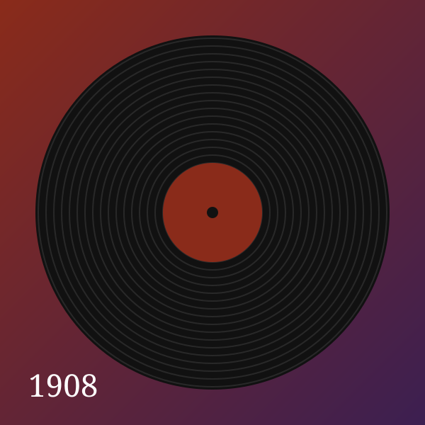

“Vengeance at Last” — Saint-Saëns, *Samson et Dalila* (1908)

Background: This is a strong early recording of an explicit revenge aria. Victor issued “Vengeance at Last” from Samson and Delilah, with baritone Emilio de Gogorza and contralto Louise Homer, accompanied by orchestra. The aria's original French incipit is “À moi l'honneur de la vengeance” (“The honour of vengeance is mine”); a contemporary Victor catalogue advertised the selection in English, so the actual recorded text should be checked against the digitized sound rather than inferred from the French libretto.
Why it fits / decision: Do not describe Delilah as merely “betraying Samson” without retaining the High Priest's role and the political conflict in the scene. The exact recorded excerpt and English translation must be verified from the sound.